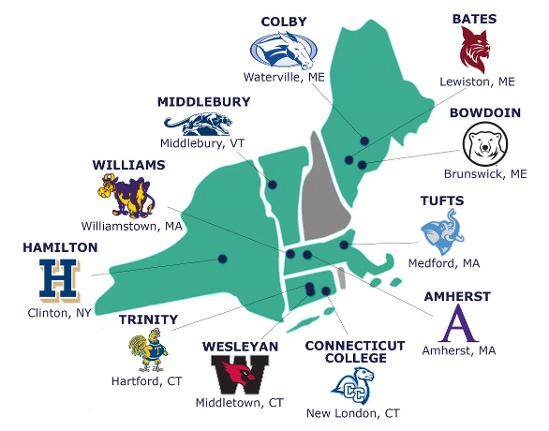
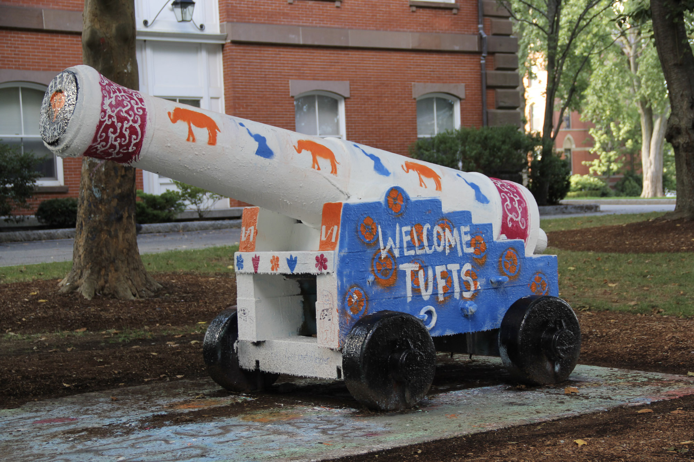

It’s easy to fall in love with a school because of its name, or reputation, but that isn’t how you should be deciding where
you want to study. There are significantly more important factors that will play into nearly every day you spend on campus.
We’ve decided to list three of the most important factors that you should be considering and researching (much of that
information you can find here at nescacguide.com for any NESCAC schools).
LOCATION

Let’s say there’s a hypothetical college called Bornell, a terrific school with tremendous representation. You’ve worked
your tail off for the last four years of high school, you have a 4.2/4 GPA and a 34 on your ACTs. HOORAY! You gained
admittance to Bornell! You come to realize Bornell is in the middle of nowhere Upstate New York. Oh no. You realize further
that Upstate New York offers nothing that you like to do - you don’t enjoy the town, the weather, or the landscape.
What’s the point of this hypothetical? If you don’t enjoy your location, you can’t enjoy your college. The nearby town, the
weather, and the landscape around you will affect every day of your experience at college. Of course, certain colleges are
extremely self-contained and centralized, so your emphasis should be on the campus itself. There have been many studies
suggesting that your location and your happiness are closely tied. So, before you choose a fancy name or legacy, make sure
you know the environment you’re going to spend the next four years in.
The NESCAC schools have a terrific set of locations and environments - ranging from a more urban experience like Tufts
University (a 10 minute ride on the T to Boston) to a very rural experience like Bates College (where the most popular club
on campus is the outdoors/climbing club). These locations begin to define the school and its culture. If you want to find out
more about a specific college’s environment (beyond just simply where it is), please go to our Blogs Page and find more of
that relevant information.
CULTURE

This might be the most obvious but hardest factor to assess. The culture of your college will define your social
experiences. Some colleges have a very politically active student body, other colleges focus on their Greek Life, and
others pack every single student and their moms into stadiums for sports games. The more you can talk to current students,
faculty, and recent alumni, the better a sense you can get for a school’s culture. Understanding what the students at that
college care about will help you decide if it’s the right place for you.
Please go here to get in contact with some of our team members to learn more about specific NESCAC
school cultures.
MAJORS and FOCUS
Most seniors in high school (and even most college kids) don’t know exactly what they want to major in. That being said,
it’s still important to consider what types of majors and programs your potential dream school offers. If you know you
enjoy the humanities, then a school with a heavy STEM focus might not be the best bet for you. This effect materializes in
multiple ways; most clearly is the fact that the faculty will be of a higher quality in certain majors than in the lesser
focus majors. There is another important factor to consider too - schools pour millions of dollars and massive amounts of
infrastructure into their top majors and programs. Schools that have strong engineering programs spend most of their money
constructing new science and technology buildings, and generally support those students more. So even if there are high
quality faculty across the board, it’s important to know what the school values and how that will affect the allocation of
their resources and direction.
We at Nescac Guide will continue to do research in each of these areas and hope we can offer insights to you as a
prospective student. See our Team Page for college representatives if you have any specific questions or just want to chat.
Otherwise, please feel free to keep reading our blogs or submit an application essay for review.